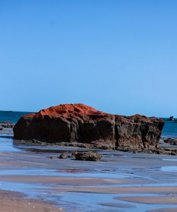

Pedra da Sereia

Saiba mais sobre a pedra da sereia
A Pedra da Sereia é um dos principais cartões-postais de Icapuí. Localizada em meio às falésias e ao mar, a formação rochosa desperta a curiosidade dos visitantes por seu formato peculiar.
Baixar mapa local (PDF)